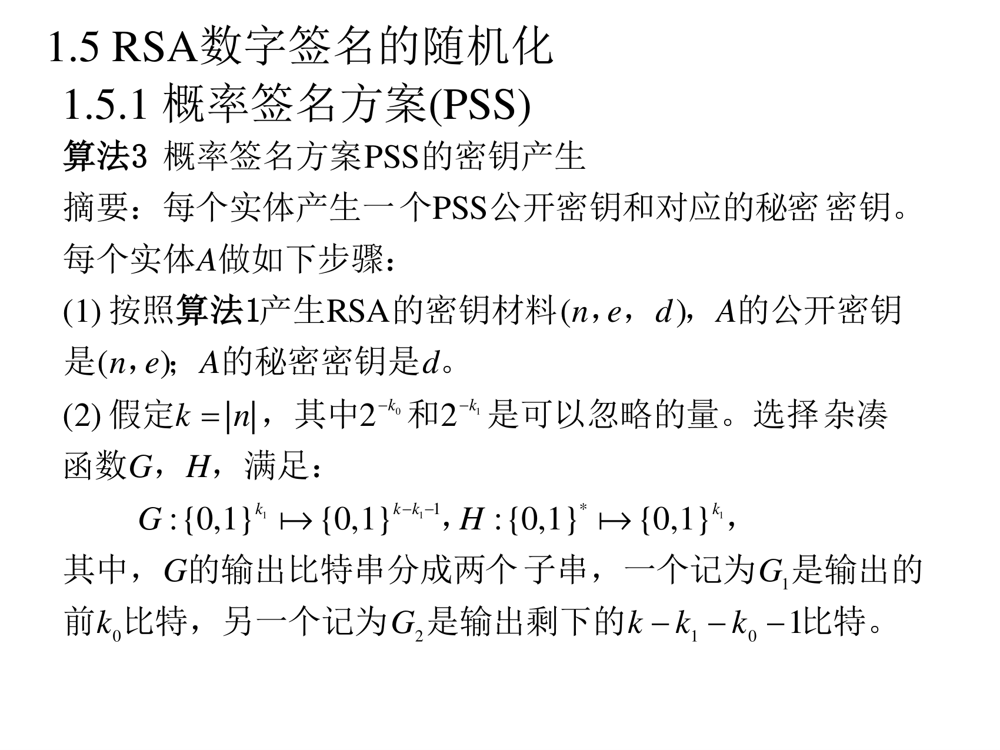
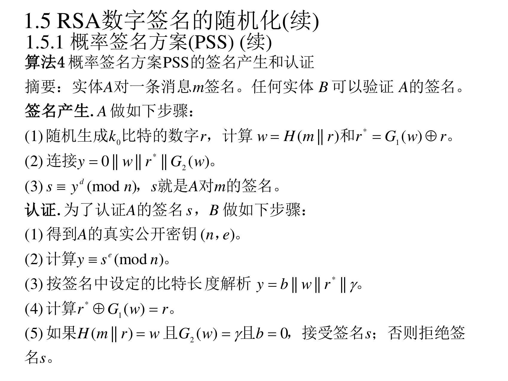
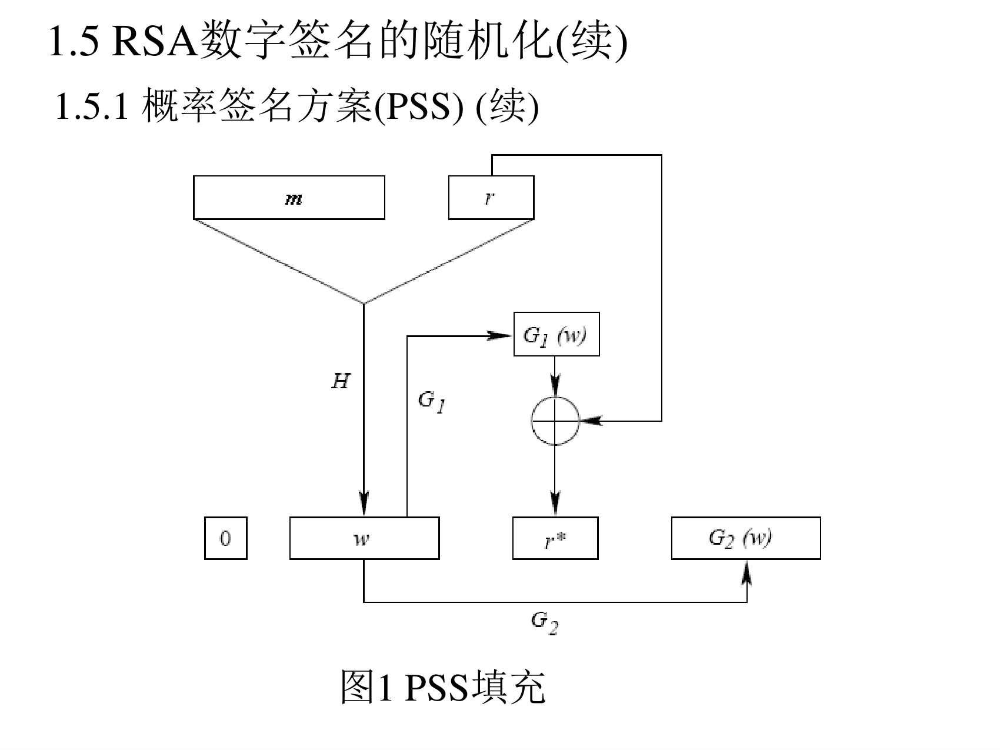
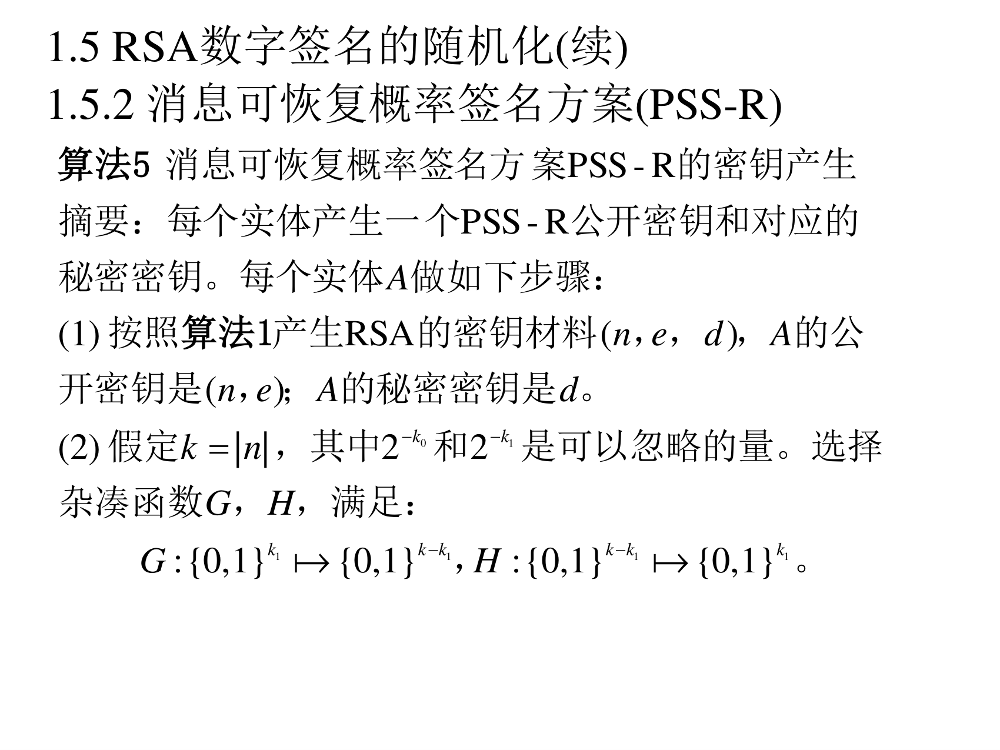
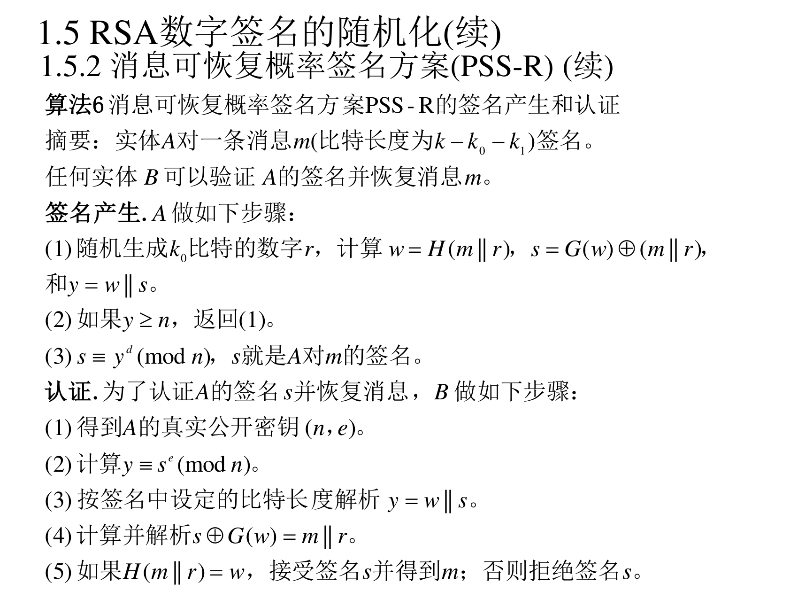
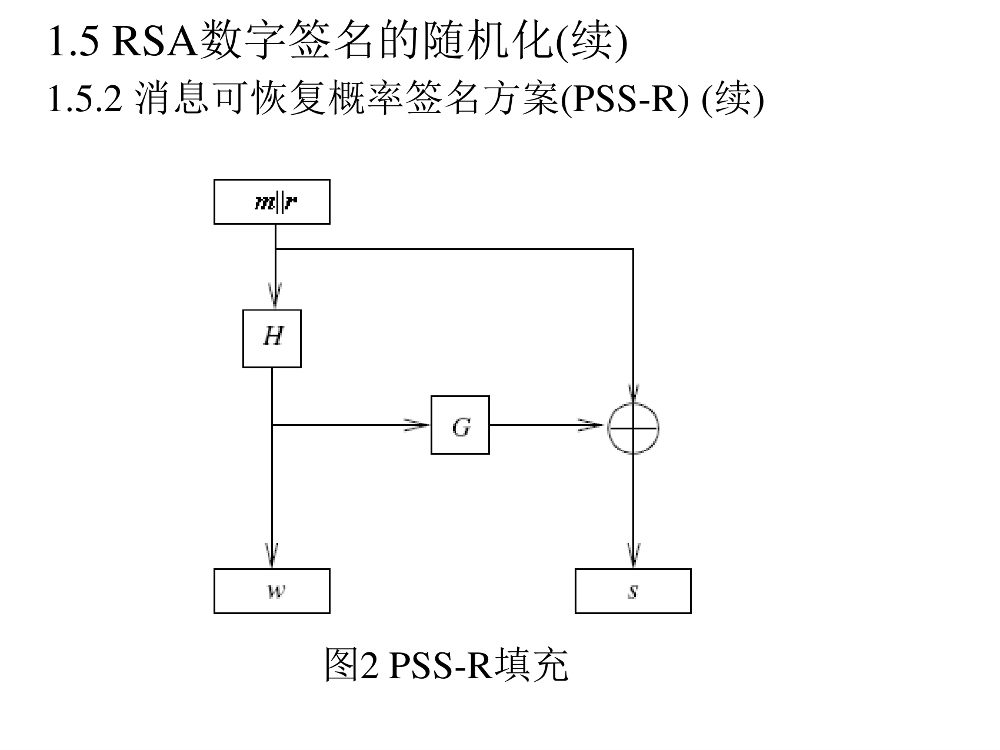

7.1.5 RSA 数字签名的随机化
前面例子 2 已经说明：确定性的、有结构的冗余函数（比如尾部补零）会被乘法特性玩坏。根本的解决办法是随机化——每次签名都引入随机的"盐"，让签名结果不可预测、不可组合。这就是 PSS 系列。
7.1.5.1 概率签名方案（PSS）
算法 3：密钥产生（PPT 第 25 页）

算法 3（概率签名方案 PSS 的密钥产生）
摘要：每个实体产生一个 PSS 公开密钥和对应的秘密密钥。每个实体 A 做如下步骤：
(1) 按照算法 1 产生 RSA 的密钥材料 (n,e,d)，A 的公开密钥是 (n,e)；A 的秘密密钥是 d。
(2) 假定 k=∣n∣，其中 2−k0 和 2−k1 是可以忽略的量。选择杂凑函数 G,H，满足：
G:{0,1}k1↦{0,1}k−k1−1,H:{0,1}∗↦{0,1}k1
其中，G 的输出比特串分成两个子串，一个记为 G1 是输出的前 k0 比特，另一个记为 G2 是输出剩下的 k−k1−k0−1 比特。
翻译成人话：k0,k1 是两个"安全参数"（实践中常取 128），2−k0、2−k1 可忽略意味着"猜错的概率比中彩票还低"。G 是"由短到长"的扩展函数（k1 位进、k−k1−1 位出），H 是"任意长到短"的压缩函数。注意 G 的输出被切成两半用：G1 用在掩码上，G2 用在末尾。
算法 4：签名产生与认证（PPT 第 26 页）

算法 4（概率签名方案 PSS 的签名产生和认证）
摘要：实体 A 对一条消息 m 签名。任何实体 B 可以验证 A 的签名。
签名产生. A 做如下步骤：
(1) 随机生成 k0 比特的数字 r，计算 w=H(m∥r) 和 r∗=G1(w)⊕r。
(2) 连接 y=0∥w∥r∗∥G2(w)。
(3) s≡yd(modn)，s 就是 A 对 m 的签名。
认证. 为了认证 A 的签名 s，B 做如下步骤：
(1) 得到 A 的真实公开密钥 (n,e)。
(2) 计算 y≡se(modn)。
(3) 按签名中设定的比特长度解析 y=b∥w∥r∗∥γ。
(4) 计算 r=G1(w)⊕r∗。
(5) 如果 H(m∥r)=w 且 G2(w)=γ 且 b=0，接受签名 s；否则拒绝签名 s。

翻译成人话（PSS 的填充结构，对照图 1 看）：
- 输入：消息 m 和一个随机数 r（每次签名都新取，这是"概率"的由来）。
- 造种子：w=H(m∥r) —— 一个 k1 比特的"指纹"，它把消息和随机数绑在一起。
- 掩码随机数：r∗=G1(w)⊕r —— 用异或把 r "藏起来"（因为 G1 的输出看起来随机）。
- 拼装 y：y=0∥w∥r∗∥G2(w) —— 长度刚好 k 比特（所以能直接当模 n 里的数）：
- 开头的
0：保证 y<n（y 最高位为 0，而 n 最高位为 1）；
- 中间的 w 和 r∗：核心数据；
- 末尾 G2(w)：校验码——验证时用它检查 w 没被篡改。
- 签名：把 y 当作"消息代表"用私钥求 d 次幂。
- 验证：反向算，然后三重检查：H(m∥r)=w（消息对得上）、G2(w)=γ（填充完整）、b=0（格式对）。全过才接受。
PSS 为什么能躲开乘法特性：因为 y 的值由随机数 r 决定，同一个消息 m 每次签出来的 y 都不一样，攻击者没法把两个签名"相乘"拼出新签名（乘积的结果不会又是某个合法的 y）。
7.1.5.2 消息可恢复概率签名方案（PSS-R）
PSS 的验证需要手里有消息 m（因为要算 H(m∥r)）。PSS-R 把消息塞进填充里，这样验证时能直接从签名里恢复出消息，不必提前拿到消息。
算法 5：密钥产生（PPT 第 28 页）

算法 5（消息可恢复概率签名方案 PSS-R 的密钥产生）
(1) 按照算法 1 产生 RSA 的密钥材料 (n,e,d)，A 的公开密钥是 (n,e)；A 的秘密密钥是 d。
(2) 假定 k=∣n∣，其中 2−k0 和 2−k1 是可以忽略的量。选择杂凑函数 G,H，满足：
G:{0,1}k1↦{0,1}k−k1,H:{0,1}k−k1↦{0,1}k1
算法 6：签名产生与认证（PPT 第 29 页）

算法 6（消息可恢复概率签名方案 PSS-R 的签名产生和认证）
摘要：实体 A 对一条消息 m（比特长度为 k−k0−k1）签名。任何实体 B 可以验证 A 的签名并恢复消息 m。
签名产生. A 做如下步骤：
(1) 随机生成 k0 比特的数字 r，计算 w=H(m∥r)，s=G(w)⊕(m∥r)，和 y=w∥s。
(2) 如果 y≥n，返回 (1)。
(3) s≡yd(modn)，s 就是 A 对 m 的签名。
认证. 为了认证 A 的签名 s 并恢复消息，B 做如下步骤：
(1) 得到 A 的真实公开密钥 (n,e)。
(2) 计算 y≡se(modn)。
(3) 按签名中设定的比特长度解析 y=w∥s。
(4) 计算并解析 s⊕G(w)=m∥r。
(5) 如果 H(m∥r)=w，接受签名 s 并得到 m；否则拒绝签名 s。

翻译大人话（和 PSS 的差别在哪）：
|
PSS |
PSS-R |
| 填充里放什么 |
随机数 + 校验码（消息不在里面） |
消息本身（用 G(w) 掩码保护） |
| 验证时要不要先有消息 |
要（算 H(m∥r) 比对） |
不要（第 (4) 步直接把 m 解出来） |
| 消息长度限制 |
无 |
k−k0−k1 比特（≈84% 的模长，见下） |
| 防止乘法特性 |
靠末尾校验码 |
靠"如果 y≥n 就重来"这一步（第 (2) 步） |
注意 PSS-R 的巧妙之处：它把消息 m 和随机数 r 拼起来，用 G(w) 异或做掩码，得到 s；然后 y=w∥s。验证时反向算出 m∥r，再用 H(m∥r) 核对 w —— 一步到位，既验证又恢复消息。
7.1.5.3 关于执行
（PPT 第 31 页）
(1) 在 RSA-PSS 中参数 k0 和 k1 只要满足 2−k0 和 2−k1 对猜测攻击不可行就能满足设计要求，通常可以选择 k0=k1=128。
(2) 在 RSA-PSS-R 中参数 k0 和 k1 需要满足 RSA-PSS 中相似的要求，例如，k0=k1=160，若再假定 k=2048，则消息 m 长度为 ∣m∣=2048−320=1728，即消息空间可达到 ∣n∣ 的 84%。
翻译成人话：k0,k1 是"花掉的安全开销"。取 160 意味着每个签名要占掉 320 比特的填充；模 2048 比特时，能装消息的空间是 2048−320=1728 比特，占 84%。这就是"消息可恢复"的代价：装得下消息，但装不下全部。